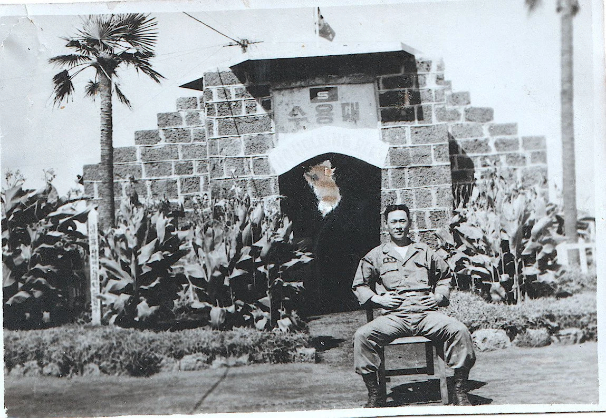
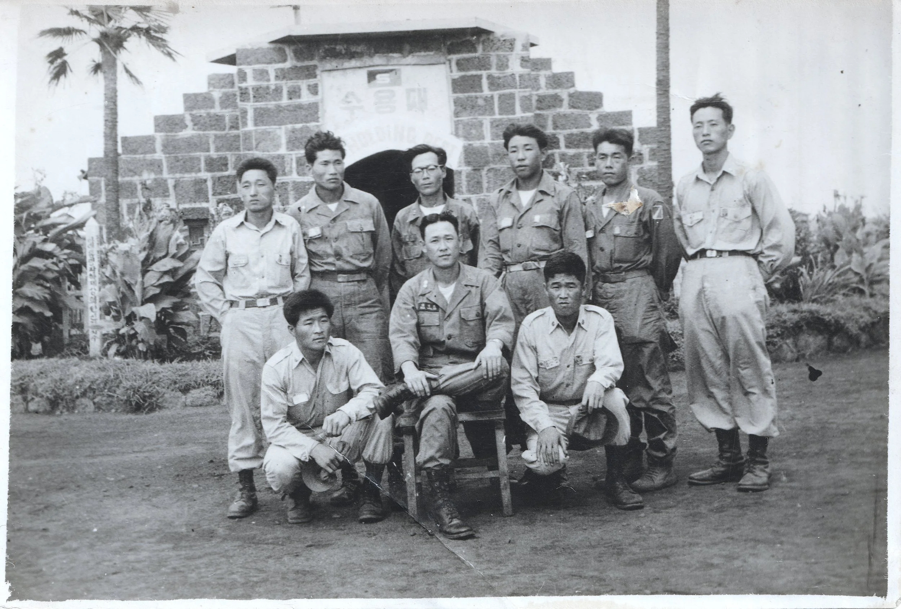
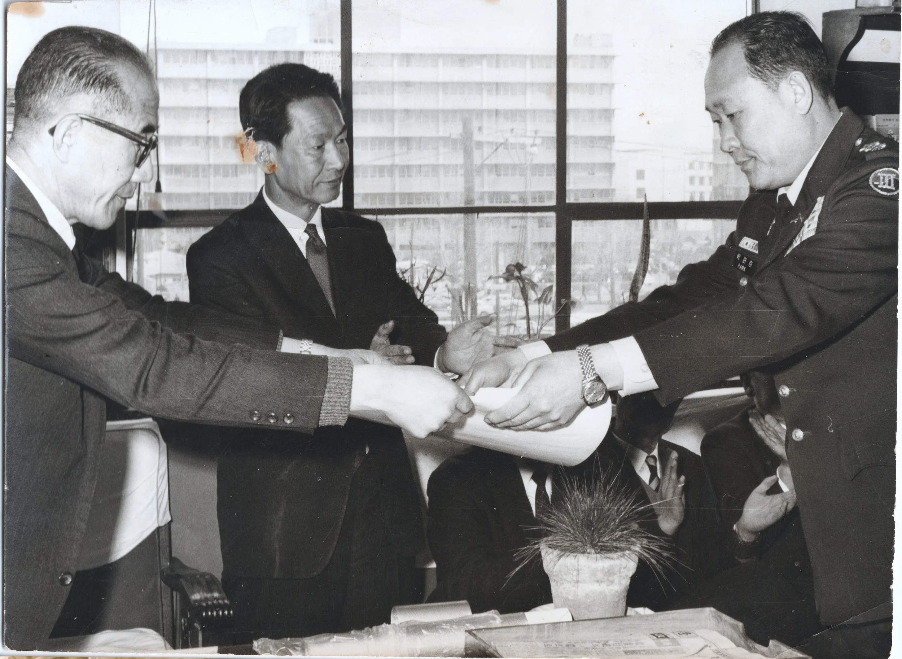

A Family History
일제강점기 및 해방 정국
1910. 08. 22
한일병합조약 체결로 대한제국의 국권이 상실되며 일제강점기가 시작됨.
The signing of the Japan–Korea
Annexation Treaty marks the beginning of the Japanese colonial period.
1924
박원호와 박봉덕, 한반도 북부 지역에서 출생.
Park Won-ho and Park Bong-deok are born in the northern part of the Korean
Peninsula.


1945
박원호가 일본 해군 장병으로 징집되어 남태평양 전선에 배치됨.
Park Won-ho is conscripted as a Japanese naval serviceman and deployed to the South
Pacific theater.
1945. 08. 15
일본의 무조건 항복으로 제2차 세계대전 종결 및 한반도 광복.
World War II concludes with Japan's unconditional surrender, leading to the liberation
of the Korean Peninsula.
1945년 말
포츠담 회담 결과에 따라 미·소 양군이 38선을 경계로 분할 점령함. 북한 지역에서 김일성 중심의 공산 정권 기반이 강화되었으며, 조만식 등 민족주의 진영과의
정치적 갈등이 심화됨.
In accordance with the Potsdam Conference, U.S. and Soviet forces partition and occupy
the Korean Peninsula along the 38th parallel. The foundations of a communist regime centered on Kim Il-sung
are solidified in the north, as political tensions with nationalist factions, including those led by Cho
Man-sik, intensify.
1946년 ~ 1947년경
박원호가 공산 정권에 대한 항의 활동으로 체포되었다가 이후 석방됨.
Park Won-ho is arrested for participating in protests against the communist regime and
subsequently released.
1948
박원호가 대한민국 육군사관학교를 제7기로 졸업하고 장교로 임관함.
Park Won-ho is commissioned as an officer after graduating from the Korea Military Academy in the 7th class
한국전쟁
1950. 6. 25
북한군의 남침으로 한국전쟁 발발.
The Korean War
breaks out following the North Korean military's invasion of the
South.
1950. 09. 15 ~ 1950. 09. 19
유엔군의 인천상륙작전 성공으로 북한군의 보급로가 차단되고 서울 수복의 기틀이 마련됨.
The success of the UN forces' Incheon Landing Operation severs North Korean supply
lines and establishes the groundwork for the recapture of Seoul.
1950. 11. 25 ~ 1950. 12. 2
중공군의 개입과 청천강
전투로 인해 유엔군의 북진이 저지되고 후퇴가 시작됨.
The intervention of the Chinese People's Volunteer Army and the Battle of the
Ch'ongch'on River halts the UN forces' northward advance, necessitating a general retreat.
1951. 01
1·4
후퇴 당시 박봉덕과 자녀들이 피난길에 오름. 이동 중 공습으로 인해 장녀가 사망하는 인명 피해가 발생함.
During the January 4th Retreat, Park Bong-deok and her children join the mass
evacuation southward; an air raid during their journey results in the death of her eldest daughter.
1950 ~ 1953
장교단의 막대한 인명 손실로 인해, 박원호는 대위 계급이었음에도 불구하고 통상 대령급 보직인 연대장 직책을 수행함.
Due to heavy casualties among the officer corps, Park Won-ho serves as a regimental
commander—a position typically held by a colonel—despite holding the rank of captain.
1953. 07. 27
정전협정
체결로 교전이 중지되고 비무장지대(DMZ)가 설정됨.
The signing of the Korean Armistice Agreement ends major hostilities and leads to the
establishment of the Demilitarized Zone (DMZ).
군 복무기와 정치적 격변
1953 ~ 1956
박원호 육군대령이 제3군단 연대장 및 제30보병사단 부사단장을 역임함. 특히 제주도 모슬포 소재 육군 제1훈련소(강병대)에서 교육연대장으로서 신병 교육 및
부대 운영을 총괄함.
Colonel Park Won-ho serves as a regimental commander in the 3rd Corps and as the vice
division commander of the 30th Infantry Division. During this period, he oversees recruit training and unit
operations as a regimental commander at the 1st Army Training Center (Gangbyeong-dae) located in Moseulpo,
Jeju Island.


1961년 봄
김종필 소령으로부터 군사 쿠데타 참여 제안을 받았으나 이를 거절함.
Park Won-ho receives a proposal from Major Kim Jong-pil to participate in a military
coup but declines the offer.
1961. 05. 16
5·16 군사정변 발생. 박원호는 쿠데타 불참을 이유로 가택 연금 조치를 받음.
Following the May
16 military coup, Park Won-ho is placed under house arrest due to
his refusal to participate in the coup.
1960년대 중반
베트남전 파병(맹호부대)을 통한 진급을 모색했으나, 군 내부의 인사 변수로 인해 파병이 무산됨.
Park Won-ho seeks deployment to the Vietnam War as a commander of the Capital
Mechanized Infantry Division; however, the assignment does not materialize due to internal
military
personnel variables.


이민
1968
박원호 전역 후 가족과 함께 미국 캘리포니아주 산호세로 이민.
Following his retirement from military service, Park Won-ho immigrates to San Jose,
California, with his family.
1979. 10. 26
박정희 대통령 시해 사건 발생.
President Park Chung-hee is assassinated.
1993
문민정부 출범 이후 과거 군 내 불이익에 대한 재평가가 이루어졌으며, 박원호의 군사적 공로를 인정하여 준장 진급이 공식 승인됨.
Following the inauguration of the civilian government, a reassessment of past
administrative disadvantages within the military is conducted. Park Won-ho’s military service is subsequently
recognized, and his promotion to Brigadier (1-star) General is officially approved.